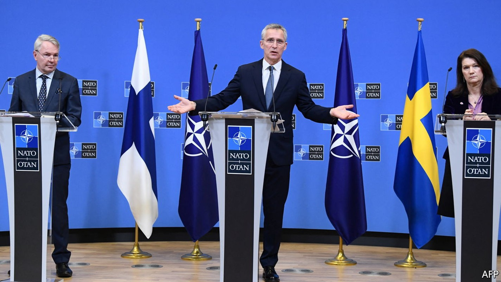
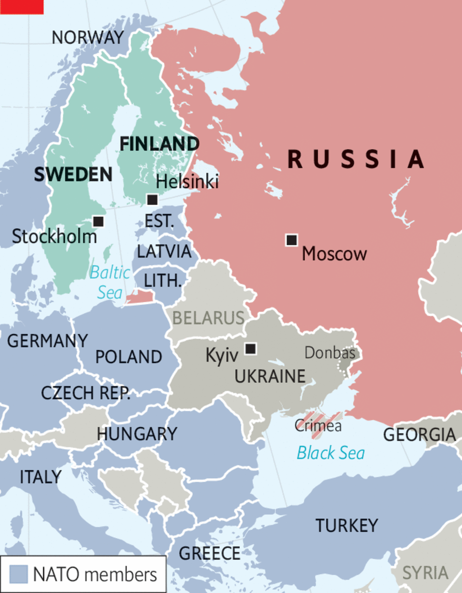

In applying to NATO, Finland and Sweden give the lie to Putin’s claims
The alliance’s expansion is not to blame for his war in Ukraine

The decision of Finland and Sweden to apply for membership of NATO is a damning rebuke to the strategic foresight of Russia’s president, Vladimir Putin. Two countries proud of their long history of military non-alignment have come to judge that the risk of antagonising their neighbour is outweighed by the extra security they will gain from joining an alliance dedicated to resisting Russian aggression. It is the direct result of the invasion of Ukraine, which Mr Putin ordered ostensibly to forestall NATO’s expansion.
It is also a rebuke to those who argue that NATO shares in the blame for the war. Mr Putin is not alone in arguing that the alliance’s expansion into central and eastern Europe after the cold war somehow made Russia’s position intolerable. Plenty of Western scholars concur. However, the choice of Finland and Sweden suggests that they have the argument upside down. Countries seek to join NATO because they are threatened by Russia, not to antagonise it.

The news from Finland and Sweden came on May 15th, as NATO foreign ministers were meeting to discuss Ukraine and the alliance’s new strategic concept in the run-up to a summit next month. Despite grumbling from Turkey, their admission is likely to be a formality. When they join, both will bring formidable armed capabilities, notably in Arctic warfare and, in Finland’s case, the largest artillery force in Europe. These can rapidly be integrated into NATO’s command structure. Membership will more than double the length of the alliance’s border with Russia (see map). It will also strengthen its northern parts, especially the Baltic states, which will become easier to resupply and which, as members, both joiners will be pledged to defend.
Mr Putin’s regime has responded by cutting electricity supplies across the border and threatening “military-technical” action, whatever that means. He is not the first Russian leader to object to the alliance’s enlargement. Back in the 1990s Boris Yeltsin complained when members of the old Warsaw Pact applied to join. Over the years this hardened into the line of argument cited by Mr Putin as justification for massing troops on Ukraine’s border. It is an argument that has gained currency in much of the world. It is flimsy at best.
Critics of NATO enlargement say that it breaks an undertaking that James Baker, then America’s secretary of state, gave to Russia in February 1990 that NATO would not expand eastward. They add that it was also unwise. As NATO grew, Russia felt increasingly threatened, and was bound to protect itself by resisting. And they point out that the West had other ways than NATO to enhance their security, such as the Partnership for Peace, which sets out to strengthen security relations between the alliance and non-members.
Mr Baker’s supposed undertaking is a red herring. He was speaking about NATO in eastern Germany and his words were overtaken by the collapse of the Warsaw Pact nearly 18 months later. NATO and Russia signed a co-operation agreement in 1997, which did not contain any restriction on new members even though enlargement had been discussed. The Czech Republic, Hungary and Poland joined almost two years later.
The undertaking that matters is the one that Russia gave in 1994, when Ukraine surrendered the nuclear weapons based on its territory. Among other things, Russia pledged not to use economic or military coercion against its neighbour. Its violations of this promise in 2014, when it seized Crimea and part of the Donbas region, and again on February 24th this year have been flagrant.
In fact NATO has every right to expand, if that is what applicants desire. Under the Helsinki Final Act, signed in 1975, including by the Soviet Union, countries are free to choose their own alliances. Is it any surprise that former members of the Warsaw Pact, which had suffered so grievously under Soviet rule, should seek a haven? For many years public opinion in Finland and Sweden was against joining NATO. It shifted after the invasion of Ukraine in February. The right for sovereign countries to determine their own destinies is one of the many things at stake in the war.
The critics of enlargement retort that NATO should have said no to central and eastern Europe all the same. Expansion was bound to make Russia paranoid and insecure. Even though NATO is a defensive alliance, the government in Moscow perceives a threat. When Mr Putin attempts to restore his security, say by modernising his armed forces, NATO, in turn, perceives heightened Russian aggression. Especially provocative was NATO’s Bucharest summit in 2008, which promised membership to Ukraine and Georgia, countries that Russia considers essential for its security.
Such security dilemmas are common in the study of international relations, and one no doubt exists between Russia and the West. But to blame the West for triggering it is scarcely credible. One reason is domestic. Mr Putin has increasingly used nationalism and Orthodox religion to shore up his rule. He needs enemies abroad to persuade his people that they and their civilisation are under threat. Seizing territory in Georgia in 2008 and in Ukraine in 2014 and today has been part of that game.
The other reason is international. Russia has a long history as an imperial power and, like most declining empires, it finds the prospect of becoming just another country hard to swallow. Regardless of NATO expansion, Russia was likely to resist forcibly as its periphery drifted off.
Were there alternatives to NATO membership? Here, the choice of Finland and Sweden speaks loudly. Both are long-term members of the Partnership for Peace. Clearly, neither felt that this offered them sufficient protection. If one of them were attacked, NATO would have no commitment to intervene. Nor would America and British nuclear weapons have covered the two countries, as they do the rest of the alliance.
By contrast, NATO proper is based on the principle that an attack on one member may be deemed an attack on them all. Its protection is as unambiguous as can be. Far from creating a benign environment, denying central and eastern Europe membership of NATO would have created a security vacuum that Russia may very well have been tempted to fill. If so, today’s war may not have been taking place in Ukraine, but in Latvia or Poland.
Finland and Sweden are right to have concluded from the tragic war being waged in Ukraine that they need more security. Mr Putin is dangerous and unpredictable not because of NATO, but because of the way he has chosen to govern Russia. Their applications should rapidly be approved. As with NATO’s expansion in the past, their membership will help secure European peace. ■